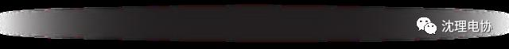
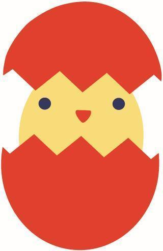
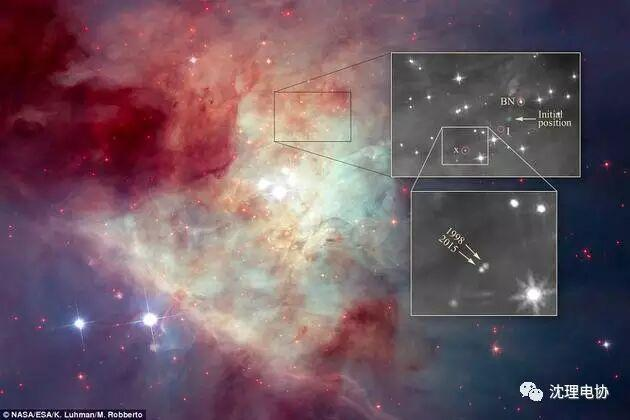
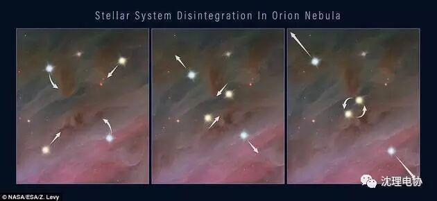
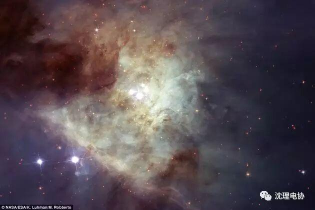

真实版“星球大战”：引力作用致恒星系统崩溃
真实版“星球大战”：引力作用致恒星系统崩溃

点击蓝字

关注我们

北京时间3月24日消息，据国外媒体报道，近日，美国航空航天局（NASA）的哈勃太空望远镜揭示了一场真实版的“太空战争”。研究者发现，在大约1400年时，猎户座大星云内一群恒星陷入了一场毁灭性的危机。在这场由引力作用主导的“战争”中，该恒星系统分崩离析，最终至少有3颗恒星从不同方向被推挤了出去。

一个恒星系统崩溃的过程。左图：多恒星系统的成员彼此围绕运行；中图：其中两颗恒星相互靠近；右图：轨道相互靠近的恒星最终或者融合，或者形成紧密的双星。这一事件释放出巨大的引力能，将系统中其他所有的恒星推挤出去，这在右图中也有体现。

该团队利用哈勃太空望远镜第三代广域照相机的近红外线视野进行了此次观测。在分析中，卢曼将2015年拍摄的红外图片和1998年利用近红外线照相机和多目标分光仪（NICMOS）获得的红外线观测结果进行了对比。
卢曼指出，相比周围的恒星，源x在17年间已经显著改变了位置，表明它的移动速度非常快，大约为每小时13万英里（约合21万公里）。天文学家又回顾了该恒星此前的位置，模拟出它在过去时间里的移动路径。卢曼发现，在1470年代时，源x在KL星云中的最初位置很接近另外两颗逃逸的恒星——贝克林-诺伊格鲍尔天体（Becklin-Neugebauer，简称BN天体）和“源I”（source I）。
BN天体在1967年的红外线图片中首次被发现，但是其快速运动直到1995年才被探测到，当时天文学家用无线电波观测方法测量出它的速度接近每小时10万公里。源I的速度大约为每小时3.5万公里。
源I只在无线电波观测中被探测到，因为它被浓密的尘埃覆盖，绝大部分可见光和红外线都被遮挡。卢曼称，这三颗恒星就像是参与到一场“引力弹球”的游戏中，最终被迫离开原来的恒星群。
当一个多恒星系统崩溃时，经常会出现两颗恒星移动得太过靠近，最终融合或形成一个紧密的双星。无论是哪种情况，都会释放巨大的引力能，将系统中所有其他的恒星推挤出去。这种能量事件还产生了大量的物质喷流。在NICMOS的图像中，这些物质呈现手指状，从被遮挡的源I恒星位置喷流而出。（任天）
NASA称，这些恒星在数百年时间里都未被人类注意到。然而，过去几十年中，其中两颗恒星穿过了猎户座大星云的浓密尘埃，在红外线和无线电波观测中被发现。
观测结果显示，这两颗恒星彼此以极高的速度相互远离。至于两颗恒星的起源，天文学家还无法给出确定的解释。研究者追溯了两颗恒星过去540年里在同一位置的变化情况，指出它们曾经属于一个已经消亡的多恒星系统。
不过，研究者计算发现，推动这两颗恒星向外移动的能量，与两颗恒星的能量之和并不相符。他们推测，至少存在另一个天体，“劫掠”了这两颗恒星的部分能量。在哈勃太空望远镜的帮助下，天文学家找到了该问题的答案——第三颗逃逸的恒星。
天文学家回溯了这颗新发现恒星的路径，发现它与前两颗恒星在540年前处于相同的位置。这三颗恒星位于名为“克莱因曼-洛星云”（Kleinmann-Low Nebula，简称KL星云），由年轻恒星组成的小区域内，靠近猎户座星云复合体中心，距离地球约1300光年。
这三颗恒星均以极快的速度“逃离”KL星云，最高速度几乎是该星云内大部分恒星的30倍。根据计算机模拟结果，天文学家认为这种引力“拔河”应当发生在年轻的恒星群中，其中挤满了新形成的恒星。
“但我们还未观察到太多的例子，特别是在非常年轻的恒星群中，”研究者卢曼（Luhman）说，“猎户座大星云周围可能存在另外的、之前从星云中被喷射出来的幼年恒星，现在它们正以极快的速度进入太空。”
研究团队的结果发表在2017年3月20日的《天体物理学研究通讯》（The Astrophysical Journal Letters）上。作为太空望远镜科学研究所（Space Telescope Science Institute）国际团队的一员，卢曼原本是要在猎户座大星云中寻找自由漂浮的行星，无意中却发现了这第三颗恒星，并称之为“源x”（source x）。
--编辑：金磊

喜欢，别忘关注~
一起来和电协君聊聊你感兴趣的故事！